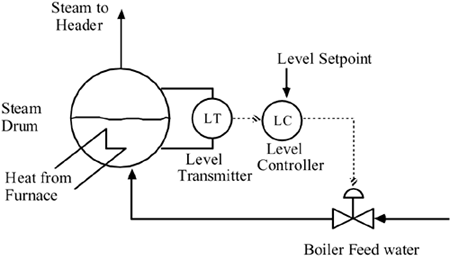
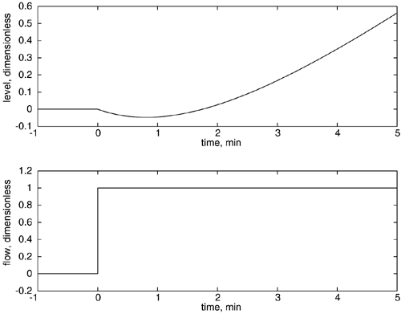

| [ Team LiB ] |
|
M9.1 BackgroundVirtually every manufacturing plant has a steam utility system. The heart of the steam system is the boiler (in general, there are a number of boilers in a plant). One of the important control loops on a steam boiler is the steam drum level controller, which is shown schematically in Figure M9-1. An actual boiler control problem consists of many other control loops, including steam pressure control. Figure M9-1. Control instrumentation diagram for boiler level. The control of steam drum level is tougher than most other level control problems because there is inverse response combined with a ramp in the level when a step increase in feed-water flow rate is made. A typical step response is shown in Figure M9-2. The ramp nature (integrator) is because if there an increase in the incoming water with no corresponding increase in outlet steam flow, then the level must continually increase. The inverse response occurs because the incoming cold water causes some of the bubbles in the steam drum to collapse, causing the level to drop slightly. However, since the incoming flow rate is higher that the outgoing flow rate, the level must eventually start rising. Figure M9-2. Response of steam drum level (deviation from steady state) to a step change in feed-water flow rate. This is an example of a system where constraints on the process output (steam drum level) are important. If the liquid level gets too high, liquid can enter the superheater section, expanding rapidly and causing pipe rupture. If the liquid level gets too low, then water is no longer in the pipes in the radiation section below the steam drum, causing the pipes to get too hot and fail. |
| [ Team LiB ] |
|